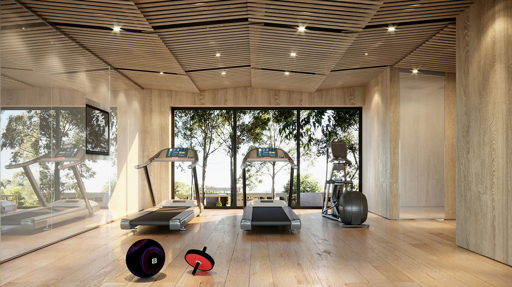

Why Strength Training?
Strength training is one of the most effective ways to transform your body and improve your overall health. It builds lean muscle, boosts your metabolism, strengthens your bones, and improves your mood. Whether you're brand new to the gym or returning after a break, this guide will help you get started with confidence.

Beginner Lifts to Learn First
Focus on mastering these fundamental compound movements before adding weight. Good form always comes before heavy lifting.
- Squat — The king of all exercises. Targets quads, glutes, and hamstrings.
- Deadlift — Builds total-body strength, especially the posterior chain.
- Bench Press — Develops chest, shoulders, and triceps.
- Overhead Press — Strengthens shoulders and upper back.
- Bent-Over Row — Builds a strong back and improves posture.
Sample Weekly Workout Schedule
This 3-day beginner program gives your muscles time to recover between sessions.
| Day | Focus | Exercises | Sets x Reps |
|---|---|---|---|
| Monday | Lower Body | Squat, Deadlift, Lunges, Leg Press | 3 x 10 |
| Wednesday | Upper Body Push | Bench Press, Overhead Press, Tricep Dips | 3 x 10 |
| Friday | Upper Body Pull | Bent-Over Row, Lat Pulldown, Bicep Curl | 3 x 10 |
| Tue / Thu / Sat | Active Recovery | Walking, light stretching, or yoga | 20–30 min |
| Sunday | Rest | Full rest day — sleep and recover | — |
Watch: Proper Form Guide
Watching a form tutorial before you lift is one of the best things you can do as a beginner. Here's a great overview from a certified trainer:
Tips for Success
- Always warm up for 5–10 minutes before lifting.
- Rest 60–90 seconds between sets.
- Increase weight gradually — only when you can complete all reps with good form.
- Log your workouts so you can track progress over time.
- Prioritize sleep — muscle is built during recovery, not during the workout itself.
For more detailed guidance, visit ACE Fitness (acefitness.org), one of the most trusted resources in the fitness industry.